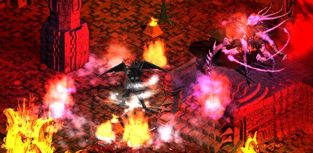

MEDIAN XL: ULTIMATIVE XVI
HTML Documentation v2.96

Release
HTML Documentation v2.96 for MXL: Ultimative XVI
This version should work well in most of the modern browsers.
Download
Or you can download the offline HTML version of the current documentation version here:
HTML Documentation v2.96 for MXL: Ultimative XVI.zip
Changes
v2.96
- Added XVI changes, and updated version log. credits
- Added Kabraxis enhanced runewords. credits
- Added Spell Damage Explained page. credits
- Many small corrections/changes. credits
- Integrated the documentation into the web site. credits
Help
If you see anything that's incorrect, incomplete or ill-formatted, please help by posting it on the forum so it can be corrected in the next version! You might even get a cookie!
Thanks
I wish to thank everyone that contributed:
- MarcoNecroX for making MXLDB which makes getting data very accessible
- suchbalance for tons of documentation changes and fixes
- Murreh, RequiemLux, Arc_Razer, Fumbles, Nitz, Stealthmaster, Unda, Lon, nikolaipka, and Food for reports
- everyone else who helped with the documentation at some point
- Tub for the skillpoint planner, and grig for his old pages
- the whole community for the support, reporting errors and suggestions!
- Brother Laz and MarcoNecroX for the amazing mods and much more
- whist for help on some random things and for coding crazy stuff for Σ
- aahz and nomercy4you for maintaining the realm, and the realm admins for... administrating :D
- all the wonderful server hosts all around the world
- someone who I definitely forgot because there's a lot of people to thank <3
Previous version splash page.